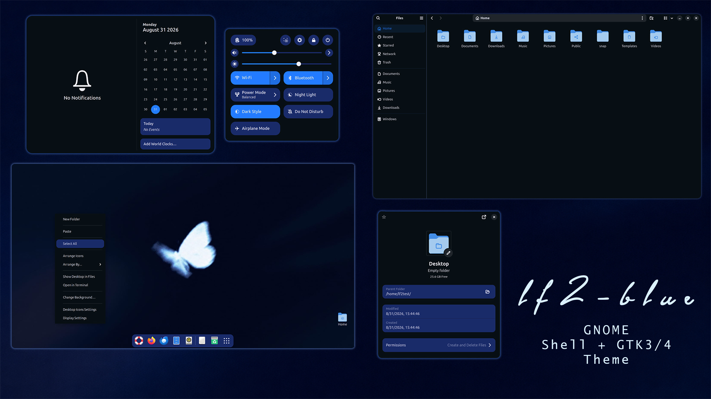
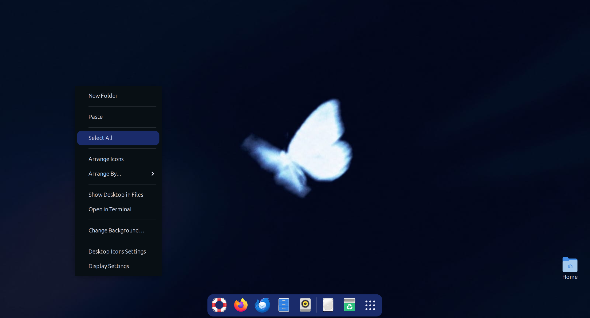
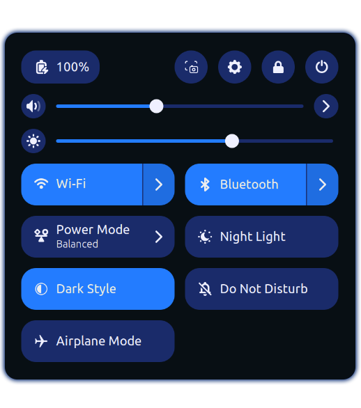
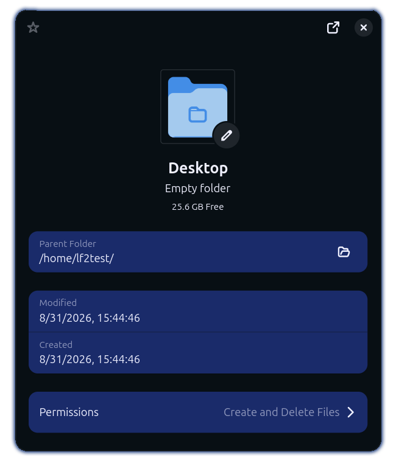
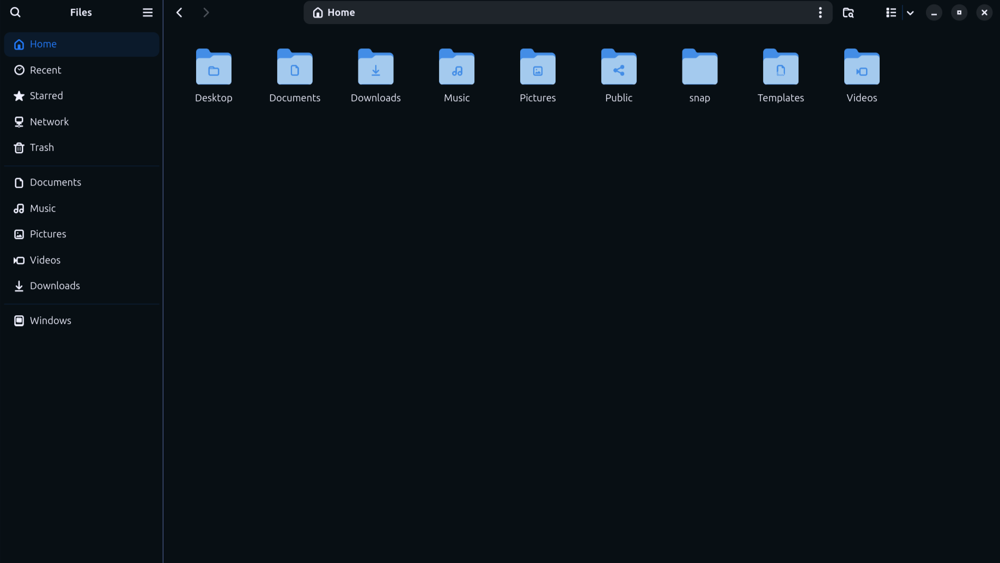

lf2 blue
Directed an AI coding agent end-to-end to turn a Rewaita CSS-Based GNOME theme into a zero-dependency, installable product with full rollback and checksum-verified, reproducible builds.

Problem
I had a hand-rolled dark-blue GNOME theme that could only be built and applied through a third-party tool called Rewaita. It worked, but I wanted it to be fully distributable - standalone, shareable Bash installer + uninstaller.
I wanted a product anyone could install (and uninstall just as easily) on a stock Ubuntu desktop. And I set one hard, non-negotiable requirement that drove everything that followed:
I achieved that, proved it with SHA‑256 checksums + a reproducible build script, and verified the whole theme applied perfectly on an isolated throwaway user.
Context & Constraints
- Target platform: any stock Ubuntu / GNOME desktop — with zero runtime dependencies beyond what ships by default.
- Three CSS systems in one theme: GTK3, GTK4/libadwaita, and the GNOME Shell each consume CSS differently, so the theme had to be engineered three ways.
- An immutable rule: never modify the real, working desktop until the product was proven safe in isolation. Because I was dealing with GNOME internals, it was non-negotiable to ensure that nothing in the user's system breaks.
- Portability priority: a stranger running this on an unknown machine had to get a working, reversible install on the first try.
My Role
I acted as product manager, QA, and design owner. The AI agent was the builder — I directed it end-to-end. Concretely, that meant:
- Setting the scope and the hard constraints up front.
- Reviewing every deliverable and driving the describe > build > review > fix loop across v0.2 > v0.3.
- Diligently reading reasoning summaries to observe the logic the AI was using to make coding decisions.
- Catching and diagnosing reasoning as well as developmental bugs. That included finding the root cause of a styling regression that the build process had misdiagnosed.
- Accepting and rejecting the agent's proposals, making final calls on design, and policing scope.
The key distinction: I didn't write the code, but I owned the decisions that shaped it, the exact relationship a PM has with engineering.
Approach
The work came down to six product decisions, each framing a constraint as a choice:
1. Source of truth over "just copy it"
The easiest path was to copy the CSS that was already applied. Instead, I had the agent
reverse-engineer the third-party tool's build pipeline and make it reproducible — so the
theme becomes a buildable product with a golden source of truth, not a brittle hand-off.
2. Portability as a product decision.
Zero dependencies was a product choice, not just a technical one. It killed several
cool-but-invasive options — inline terminal images (Sixel/Chafa) and animations. A good
product decision kills features that hurt installability.
3. Staged rollout.
<
I enforced a strict test progression before anything touched a real desktop:
sandbox > fake gsettings dry-run > isolated HOME > throwaway Linux user > real verify.
This mirrors how modern teams ship: pre-prod > canary > prod. It honored the
"don't touch my machine" constraint and de-risked the whole delivery.
4. Verification over vibes.
"It works" wasn't the definition of done. A checksum + reproducible build pipeline proved
the shipped CSS was byte-identical to the golden source. Done was defined, written down,
and checked by script — not by trust.
5. Reversibility as product quality.
Every install backed up the current state so the uninstaller could restore it exactly.
That rollback is the "undo" feature — and it's why users adopt products they know can't
hurt them.
6. Scope trimming under constraint.
Animations, inline images, fallback chains — I cut them all. Shipping a smaller, perfect
thing beats a bigger, fragile one, especially when a stranger is running it on an unknown
machine.
Outcome
- Shipped a standalone installer + uninstaller plus a third mock/preview script, applying the theme to GTK3, GTK4/libadwaita, and the GNOME Shell.
- Reproducible, source-of-truth schema. The shipped artifacts are byte-identical to the golden source, verified with SHA-256 checksums and a rebuild-and-diff pipeline.
- Validated end-to-end in isolation — dry-runs, isolated environments, a throwaway user, and a real compositor session — before ever touching a real desktop.
- Full rollback. The uninstaller restores the exact prior state, not a hard-coded default.
- Shipped v0.3 with the final ASCII logo and the LF2 Blue palette.
Reflection
- Confirming a visual with a human beats blind-verification. AI kept misreading its own ASCII rendering, ASCII art was a specialisation it couldn't deliver, so I used web ASCII art generators to deliver the ASCII art directly for use.
- Silent failures are the worst kind of bug. A single invalid CSS selector was silently rejecting an entire GTK4 stylesheet. If nothing errors loudly, nobody notices — until the user does.
- Scope discipline is a two-way street. The user cuts an AI agent's scope as often as it cuts theirs; Classic PM logic - just because you can build something doesn't mean you should.
Gallery




